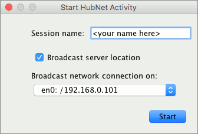
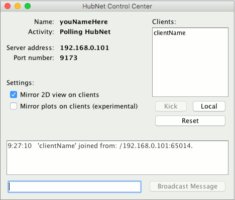

This section of the User Manual introduces the HubNet system and includes instructions to set up and run a HubNet activity.
HubNet is a technology that lets you use NetLogo to run participatory simulations in the classroom. In a participatory simulation, a whole class takes part in enacting the behavior of a system as each student controls a part of the system by using an individual device, such as a networked computer.
For example, in the Gridlock simulation, each student controls a traffic light in a simulated city. The class as a whole tries to make traffic flow efficiently through the city. As the simulation runs, data is collected which can afterwards be analyzed on a computer.
For more information on participatory simulations and their learning potential, please visit the Participatory Simulations Project web site.
NetLogo is a programmable modeling environment. It comes with a large library of existing simulations, both participatory and traditional, that you can use and modify. Content areas include social science and economics, biology and medicine, physics and chemistry, and mathematics and computer science. You and your students can also use it to build your own simulations.
In traditional NetLogo simulations, the simulation runs according to rules that the simulation author specifies. HubNet adds a new dimension to NetLogo by letting simulations run not just according to rules, but by direct human participation.
Since HubNet builds upon NetLogo, we recommend that before trying HubNet for the first time, you become familiar with the basics of NetLogo. To get started using NetLogo models, see Tutorial #1: Running Models in the NetLogo Users Manual.
HubNet simulations are based on a client/server architecture. The activity leader uses the NetLogo application to run a HubNet activity. When NetLogo is running a HubNet activity, we refer to it as a HubNet server. Participants use a client application to log in and interact with the HubNet server.
While HubNet is only supported via the Java Desktop clients at the moment, we hope to add support for other types of clients such as tablets and phones in the future.
The following activities are available in the Models Library, in the HubNet Activities folder. Information on how to run the models and activities can be found in the Info tab of each model. Additional discussion of educational goals and ways to incorporate many of the activities into your classroom in the Participatory Simulations Guide on the Participatory Simulations Project web site.
To use the client application you simply need to launch the HubNet client application that is bundled with NetLogo.
To use Computer HubNet, you need a networked computer with NetLogo installed for the server. When using the client application you will also need a networked computer with NetLogo installed for each participant. When using in classroom settings we also suggest an attached projector for the leader to project the entire simulation to the participants.
You’ll find the HubNet activities in NetLogo’s Models Library, in the HubNet Activities folder. We suggest doing a few practice runs of an activity before trying it in front of a class. 
Open a Computer HubNet model. NetLogo will prompt you to enter the name of your new HubNet session. This is the name that participants will use to identify this activity. You may also see a broadcast network selection dropdown for which more extensive documentation is available in the FAQ. For now, just enter a name and press Start.
NetLogo will open the HubNet Control Center, which lets you interact with the HubNet server.
You, as the leader, should then notify everyone that they may join. To join the activity, participants launch the HubNet Client application and enter their name. They should see your activity listed and can join your activity by selecting it and pressing Enter. If the activity you started is not listed the student can enter the server address manually which can be found in the HubNet Control Center.

The HubNet Control Center lets you interact with the HubNet server. It displays the name, activity, address and port number of your server. The “Mirror 2D View on clients” checkbox controls whether the HubNet participants can see the view on their clients, assuming there is a view in the client setup. The “Mirror plots on clients” checkbox controls whether participants will receive plot information.
The client list on the right displays the names of clients that are currently connected to you activity. To remove a participant from the activity, select their name in the list and press the Kick button. To launch your own HubNet client press the Local button, this is particularly useful when you are debugging an activity. The “Reset” button kicks out all currently logged in clients and reloads the client interface.
The lower part of the Control Center displays messages when a participant joins or leaves the activity. To broadcast a message to all the participants, click on the field at the bottom, type your message and press Broadcast Message.
On some networks, the HubNet Client cannot automatically detect a HubNet server. Tell your participants to manually enter the server address and port of your HubNet server, which appear in the HubNet Control Center.
Note: The technical details on this are as follows. In order for the client to detect the server, multicast routing must be available between them. Not all networks support multicast routing. In particular, networks that use the IPsec protocol typically do not support multicast. The IPsec protocol is used on many Virtual Private Networks (VPNs).
If your computer or network has a firewall, it may be impeding the HubNet server from communicating. Make sure that your computer and network are not blocking ports used by the HubNet server (ports 9173-9180).
Some activities don’t have a view on the client. If you want to add a view simply select “HubNet Client Editor” from the Tools Menu and add a view like any other widget. Make sure to press the “Reset” button before having clients log in.
You will have to force the client to quit. On OS X, force quit the application by selecting Force Quit… in the Apple menu. On Windows, press Ctrl-Alt-Delete to open the Task Manager, select HubNet Client and press End Task.
The HubNet server may stop working if the computer goes to sleep. If this happens, quit the NetLogo application and start over. Change the settings on your computer so it won’t sleep again.
See Contacting Us.
If HubNet malfunctions, see the bug reporting information at Contacting Us.
Please note that:
For information on upcoming workshops and NetLogo and HubNet use in the classroom, please contact us.
To learn about authoring or modifying HubNet activities, see the HubNet Authoring Guide.
To learn about running HubNet activities from the command line, with no GUI on the server, see the HubNet section in the Controlling Guide.
If you have any questions about HubNet or need help getting started, contact us.